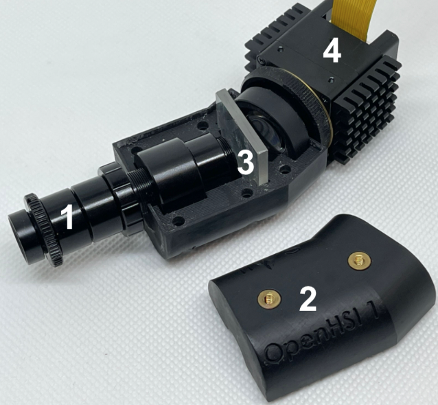

Getting Started
Welcome to the Open Source DIY Hyperspectral Imager Library

This Python library is licensed under the Apache v2 License. The documentation is licensed under a Creative Commons Attribution 3.0 Australia License.
Documentation can be found here: https://openhsi.github.io/openhsi/.
Install
pip install openhsi
or
conda install -c conda-forge openhsi
The source code can be found on GitHub. To install a development version see Contributing.
Requirements
- Python 3.7+
Depending on your camera sensor, install:
Ximea SDK (See https://www.ximea.com/support/wiki/apis/Python)
FLIR Spinnaker SDK with the python package (See https://www.flir.com/products/spinnaker-sdk/)
LUCID SDK (See https://thinklucid.com/downloads-hub/)
A descriptive installation guide on Linux platforms can be found at https://openhsi.github.io/openhsi/tutorial_installing_linux.html
Development and Contributions
This whole software library, testing suite, documentation website, and PyPI/conda package was developed in Jupyter Notebooks using nbdev.
We have moved to nbdev2 which uses Quarto to generate this documentation site.
Citation
If OpenHSI has been useful for your research, please acknowledge the project in your academic publication. The OpenHSI paper has been published in MDPI Remote Sensing and can be accessed at https://doi.org/10.3390/rs14092244.
@article{mao2022openhsi,
title={OpenHSI: A Complete Open-Source Hyperspectral Imaging Solution for Everyone},
author={Mao, Yiwei and Betters, Christopher H and Evans, Bradley and Artlett, Christopher P and Leon-Saval, Sergio G and Garske, Samuel and Cairns, Iver H and Cocks, Terry and Winter, Robert and Dell, Timothy},
journal={Remote Sensing},
volume={14},
number={9},
pages={2244},
year={2022},
publisher={MDPI}
}How to use
For more detailed instructions, please see the tutorials in the sidebar of the documentation site.
Taking a single hyperspectral datacube
The example shown here uses a simulated camera for testing purposes. Replace SimulatedCamera with the appropriate Python class for your own camera to work with real hardware. For example, use LucidCamera imported from openhsi.cameras inplace of SimulatedCamera.
from openhsi.capture import *
with SimulatedCamera(img_path="assets/rocky_beach.png", n_lines=1024, processing_lvl = 3,
json_path="assets/cam_settings.json",cal_path="assets/cam_calibration.nc") as cam:
cam.collect()
fig = cam.show(plot_lib="matplotlib",robust=True)The RGB representation is made using selected bands for red, green, and blue. These bands can be customised along with options for displaying the image without outliers affecting the colour scale/contrast. The example flag used here is robust which takes the 2-98% percentile. There is also the hist_eq flag which performs histogram equalisation. If none of these flags are set, then the colour scale uses the min and max value.
fig.opts(fig_inches=7,title="simulated hyperspectral datacube")For more information on how to use this library, check out our Quick Start Guide.
Hardware cameras

The hardware consists of a collimator tube with a slit (1) mounted in a 3D printed housing (2). A diffraction grating (3) is used to split the incoming light into its component colours to be detected on the camera sensor (4).
We have the following implementations in openhsi.cameras:
These all have the same interface so in principle, these OpenHSI cameras can be used interchangeably as long as you have the right calibration files.
Frequently Asked Questions
I’m having trouble with the software install. Do you have a guide?
Check out our Linux Installation Guide and Windows Installation Guide.
Where can I get a quick overview of what openhsi can do?
Our Quick Start Guide is the best place to start. The sidebar also includes documentation for each software module in more detail.
The OpenHSI camera is a pushbroom sensor and requires motion to scan a 2D space. What kind of motion should I apply?
Any motion that allows you to scan a 2D space is okay. This can be from translating the camera is space or from applying a rotation. (or both translation and rotation) The developers of openhsi has flown the OpenHSI camera on a drone which sweeps across an area of interest in multiple overlapping swaths. You can fly this camera on other platforms, vehicles, etc…
How fast should I move the camera?
It’ll depend on what your case is. This answer assumes you want square pixels. Assuming the cross-track (scan line) spatial resolution is 0.42 mrad in the field of view, and your altitude is 120 m, the ground sample distance is:
GSD \(\approx\) 0.00042 \(\times\) 120 (using the small angle approximation) = 5 cm
Assuming your frame rate is 98 FPS at your desired processing level, and you want to get square pixels, you want to be flying at speed
\(v\) = 98 \(\times\) 0.05 = 4.9 m/s
If you fly faster/slower than this, your datacube will appear to be stretched spatially.